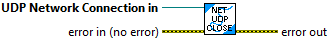
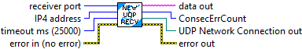
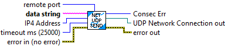

Close an open UDP connection.
Inputs
-- UDP Network Connection -- UDP Connection Reference -- The connection to clost
-- Error in -- Error cluster -- input propagated error. (Optional. Default: No error )
Outputs:
-- Error out -- Error cluster -- output propagated error.

Listen for and read a packet of data from the network using the UDP protocol. This routine can listen for a single computer or listen for any senders on the subnet.
This subVI does not return to the caller until either data has been received or a timeout has occured. Suggest putting this function in a separate loop to avoid issues slowing down other code.
Inputs:
-- Receiver Port -- UInt16 -- UDP port number used for listening. Only data sent to this port will be returned. (Optional. Default: 5801)
-- IP4 Address -- UInt32 -- The IP address of the computer expected to send data. If this value is 0, then then data will be returned for any sender. Use the standard TCP/IP LabVIEW functions to convert a standard IP4 address in the form of 123.123.123.123 to an unsigned integer for this input. (Optional. Default: 0)
-- Timeout ms -- Int32 -- Timeout value in milliseconds. (Optional. Default: 25000 )
-- Error in -- Error cluster -- Propagated error cluster. (Optional. Default: no error)
Outputs:
-- data out -- string -- Last data message sent to the specified port number.
-- Consec Err -- Int32 -- Counter indicating the number of consecutive errors that have occured.
-- UDP Network Connection -- UDP Connection Reference -- Reference to the UDP network connection. When finished with communication, the connection should be closed.
-- Error out -- Error cluster -- Current propagated error cluster.

Send a packet of data over the network using the UDP protocol. Data can be directed at a single computer or broadcast to the entire subnet.
Inputs:
-- Remote Port -- UInt16 -- UDP port number to use when sending the data. The reciever must be listening for data on this port number. (Optional. Default: 5801)
-- Data String -- string -- string of data to be sent. (Generally the maximum reliable size of a UDP packet is approximately 500 bytes. On Ethernet, packets of approximately 1450 bytes may be possible.)
-- IP4 Address -- UInt32 -- The IP address of the computer listening for this data. If this value is 0, then the data is broadcast to the entire subnet. Use the standard TCP/IP LabVIEW functions to convert a standard IP4 address in the form of 123.123.123.123 to an unsigned integer for this input. (Optional. Default: 0)
-- Timeout ms -- Int32 -- Timeout value in milliseconds. (Optional. Default: 1000 )
-- Error in -- Error cluster -- Propagated error cluster. (Optional. Default: no error)
Outputs:
-- Consec Err -- Int32 -- Counter indicating the number of consecutive errors that have occured.
-- UDP Network Connection -- UDP Connection Reference -- Reference to the UDP network connection. When finished with communication, the connection should be closed.
-- Error out -- Error cluster -- Current propagated error cluster.